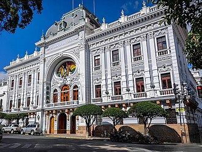

Breve presentación:Sucre es mi cuna y el escenario donde crecí; una ciudad preciosa conocida como la "Ciudad Blanca" de Bolivia. Caminar por sus calles empedradas, rodeada de su arquitectura colonial bien conservada, techos de teja roja y fachadas impecables, te transmite una tranquilidad única y una conexión profunda con la historia y la cultura del país. Para mí, Sucre no es solo la capital constitucional; es un lugar lleno de vida universitaria, arte en cada esquina, un clima templado perfecto y una calidez humana que te hace sentir siempre en casa. Crecer en un entorno tan rico visual y culturalmente alimentó desde muy joven mi sensibilidad artística, mi amor por las tradiciones y esa curiosidad constante por aprender y crear. .